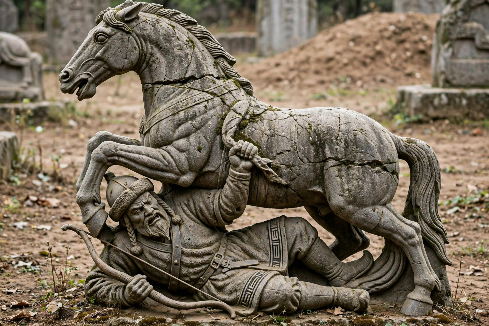

| Huo Qubing (140–117 BC) | |
|---|---|
| Allegiance | Han dynasty |
| Uncle | General Wei Qing |
| Known for | Victories over the Xiongnu |

Huo Qubing (140–117 BC) was a brilliant young cavalry general of the Western Han dynasty, nephew of General Wei Qing and Empress Wei Zifu, famous for decisive campaigns against the Xiongnu.
At only 17–18, Huo distinguished himself in the 123 BC expedition. In 121 BC he led two campaigns through the Hexi Corridor, defeating Xiongnu princes and securing the corridor for Han commanderies (Wuwei, Jiuquan, Dunhuang and Zhangye), opening routes to the Western Regions. In the great 119 BC Battle of Mobei, he marched deep into Mongolia, defeated the Worthy King of the Left and, by tradition, performed sacrifices at Mount Langjuxu (Khentii) and the Baikal region.
Huo died in 117 BC at about 23, reportedly of illness. Emperor Wu honoured him with a tomb mound shaped like the Qilian Mountains at Maoling, decorated with stone sculptures including the famous horse trampling a Xiongnu warrior, now in the Shaanxi History Museum. His saying that he would not think of home while the Xiongnu remained became proverbial.